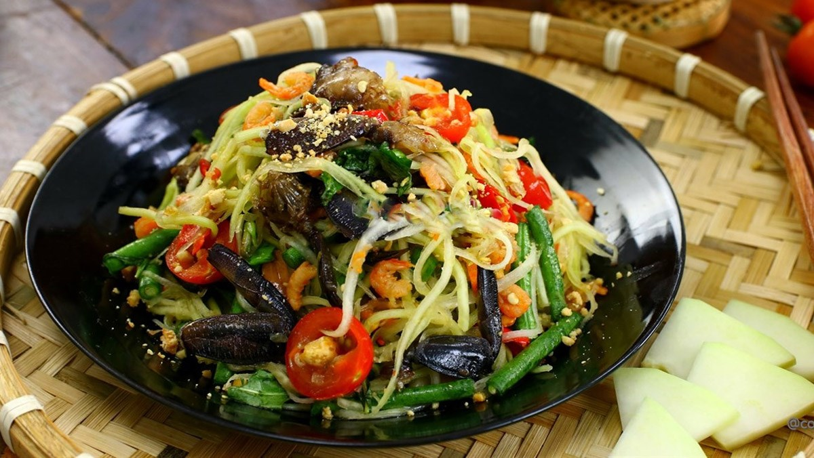

Ba khía loài động vật sinh trưởng trong môi trường đầm lầy ưa nước lợ, chính vì thế ở Cà Mau loài động vật này phát triển mạnh mẽ.

Internet
Ba khía được ngư dân bắt vào ban đêm khi ba khía trú ngụ trên các cành cây. Sau khi đem về rửa qua nhiều lần với nước sạch để sạch bùn, sau đó ba khía được đem ủ với nước muối đã được nấu sau 5 ngày. Ba khía muối được kết hợp ăn với gỏi đu đủ, rau muống, bắp cải,... đều ngon. Ba khía có vị mặn mặn và thịt có hậu ngọt ăn cùng gỏi có độ chua chua hoặc cay cay thêm với mùi hơi nồng của rau răm, một món khoái khẩu mà ít ai có thể cưỡng lại được mà khi đến Cà Mau ai cũng phải thử qua.